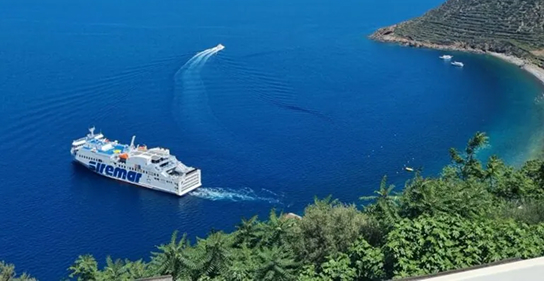

La dipendenza dai trasporti marittimi
I fattori che influenzano la stanzialità e il pendolarismo nell'arcipelago eoliano, focalizzata sui vincoli logistici e sull'impatto dei collegamenti marittimi per la popolazione residente.
In questa pagina troverai:

Collegamenti essenziali
I trasporti marittimi per le Eolie non sono turismo, ma una linea vita. Per i residenti, garantiscono l'accesso a ospedali e scuole secondarie, accentrate a Lipari e sulla terraferma. L'organizzazione quotidiana, dagli studi universitari alle visite mediche, è vincolata agli orari invernali ridotti, creando un pendolarismo forzato e costoso.
I confini della metropoli
Vivere stabilmente implica vedere l'arcipelago come un'unica, complessa città. Lipari è il nucleo di servizi; le altre isole dipendono da questi collegamenti, creando confini invisibili. Se il mare è mosso, l'isola minore si isola, e ogni spostamento richiede ore, spezzando la fluidità e limitando le opportunità rispetto a un quartiere di terraferma.
L'economia dell'attesa
L'economia e la vita domestica dipendono interamente dall'arrivo merci via nave. Beni alimentari, farmaci, carburanti e materiali edili devono essere trasportati, riflettendo i costi logistici sui prezzi finali. Le imprese locali affrontano ritardi, devono gestire grandi scorte e lottare con costi di trasporto elevati che penalizzano l'insularità e scoraggiano gli investimenti.
Il disagio del maltempo
Il fattore più critico è la vulnerabilità alle condizioni meteorologiche. Scirocco e Maestrale possono isolare le comunità per giorni, cancellando corse, impedendo rientri, visite mediche o l'arrivo della posta. Questa imprevedibilità mina la sicurezza e la stabilità necessarie per crescere i figli, spingendo allo spopolamento e negando il fondamentale diritto alla mobilità.